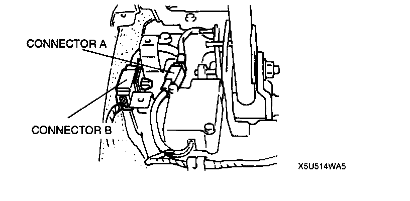
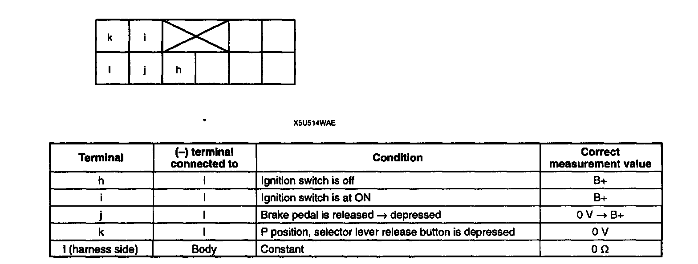
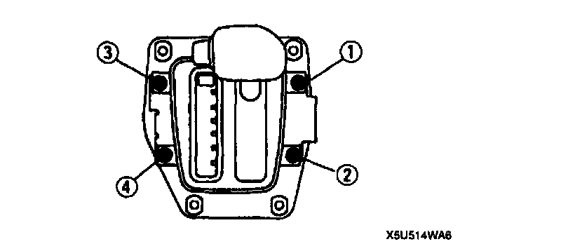

Shift-Lock Actuator Inspection
SHIFT-LOCK ACTUATOR INSPECTION1. Remove the rear console.
2. Remove the selector lever knob and indicator panel screws.

3. Lift up slightly the selector lever, selector sleeve, and indicator panel, and disconnect the O/D OFF switch connector.
4. Shift the selector lever to P position.

5. Turn the ignition switch to ON, and inspect for terminal voltages and continuity, referring to the chart below. Disconnect the shift-lock actuator connector to inspect for continuity between terminal C (harness side) and ground.
6. If not as specified, repair the wiring harness and/or shift-lock actuator.
7. Grasp the O/D OFF switch wiring harness and pull it while pushing the selector lever knob down fully onto the selector lever.
8. Connect the O/D OFF switch connector.

9. Adjust the indicator panel. Install the screws in the order shown in the figure.
Tightening torque 2.0 - 2.9 Nm (20 - 30 kgf-cm, 18 - 26 inch lbs.)
10. Apply locking compound to the selector lever knob screw threads after the threads have been cleaned. Tighten the screws.
Tightening torque 2.0 - 2.9 Nm (20 - 30 kgf-cm, 18 - 26 in lbs.)
11. Install the rear console.
12. Verify correct operation of the shift-lock system.